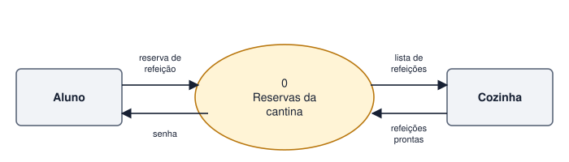
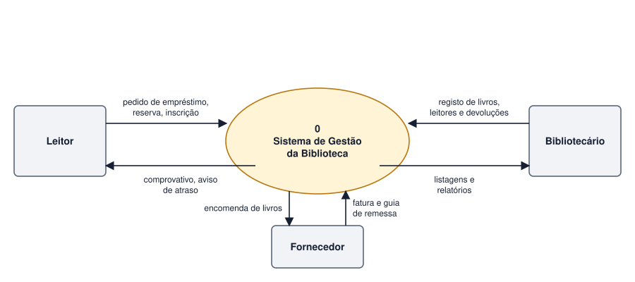

Tema 20 · UML e modelação do comportamento
Diagramas de Fluxo de Dados (DFD)
Entidades externas, processos, fluxos e armazenamento de dados
O Diagrama de Fluxo de Dados (DFD) mostra como os dados circulam: de onde vêm, que transformações sofrem e para onde vão. Interessa-lhe o movimento dos dados, não a ordem das operações nem a estrutura da base de dados.
Elementos
| Elemento | Representação | Função |
|---|---|---|
| Entidade externa | Retângulo | Origem ou destino dos dados fora do sistema (Leitor, Fornecedor). |
| Processo | Círculo, elipse ou retângulo arredondado | Transforma dados de entrada em dados de saída. Nome: verbo + complemento. |
| Fluxo de dados | Seta com nome | Dados em movimento entre elementos. |
| Armazém de dados | Retângulo aberto ou duas linhas | Dados guardados (ficheiro ou tabela). |
Regras
- Todos os fluxos têm nome, que descreve os dados que transportam.
- Todo o processo tem pelo menos uma entrada e uma saída.
- Os dados não passam diretamente entre entidades externas, nem entre armazéns: passam sempre por um processo.
- Entidades externas não acedem diretamente a armazéns.
DFD de contexto
O diagrama de contexto (nível 0) mostra o sistema como um único processo, rodeado pelas entidades externas e pelos fluxos que trocam com ele. É o DFD mais geral e corresponde à fronteira do sistema.

Atividade
Construir um DFD de contexto para um sistema de biblioteca
Construa o DFD de contexto para o sistema de gestão de uma biblioteca. Identifique as entidades externas e os fluxos de dados em cada sentido.
Ver proposta de resolução

| Entidade externa | Fluxos de entrada no sistema | Fluxos de saída do sistema |
|---|---|---|
| Leitor | pedido de empréstimo, reserva, inscrição | comprovativo, aviso de atraso |
| Bibliotecário | registo de livros, leitores e devoluções | listagens e relatórios |
| Fornecedor | fatura e guia de remessa | encomenda de livros |
Em resumo
- O DFD mostra o movimento dos dados entre entidades externas, processos e armazéns.
- Todos os fluxos têm nome e passam por um processo.
- O diagrama de contexto representa o sistema como um único processo.